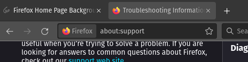
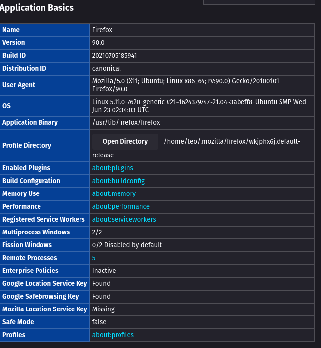
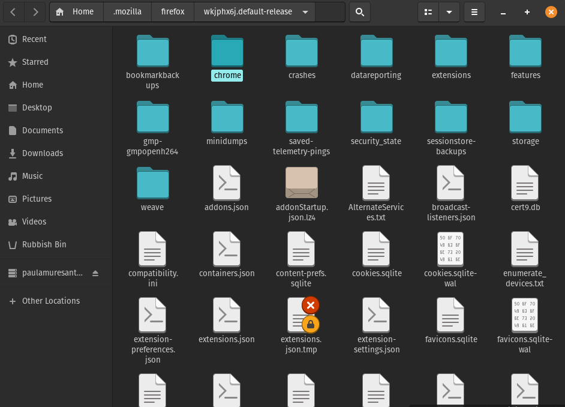
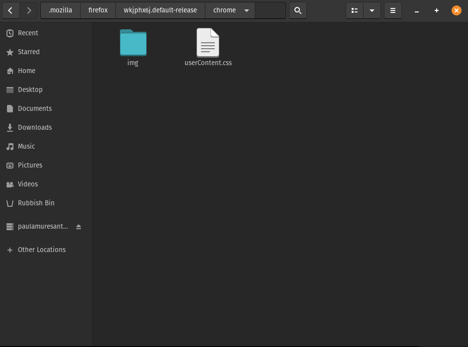
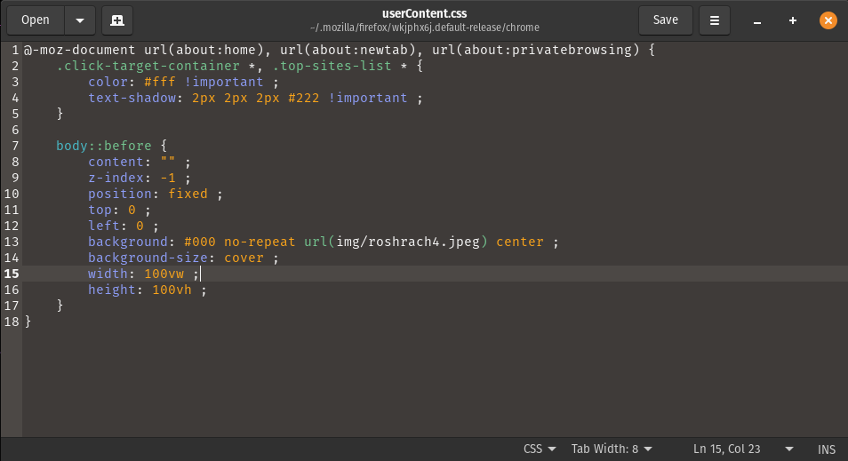
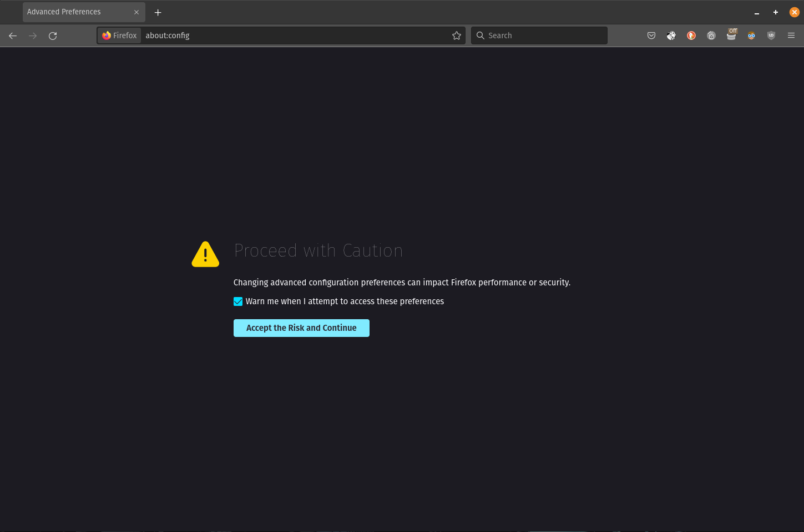
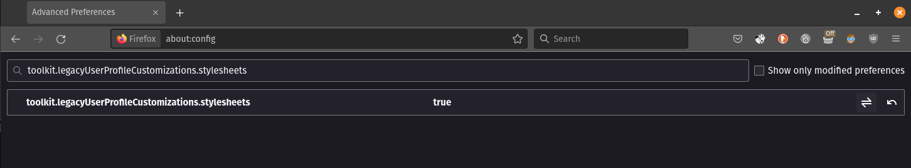
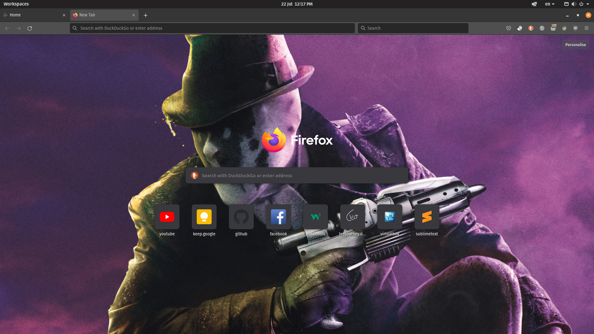

1.Firefox directory
To find the firefox directory go type in your browser this:
Then find:
and press
2.Changes in the directory
Good, now we have the firefox directory.
Now, create a new directory named (remember, all letters need to be lowercase)
3.Create files
Ok, you did good until now. We are almost there.
Create a directory named
create a css file and save it as:
The content of the CSS file:
Where you see url(img/roshrach4.jpeg) change the url to your photo location.
4.Change firefox settings
Ok, this is the last step.
Go to and accept the risks
now in the search bar put and set the value to TRUE
This is how mine looks like:
You can find me on youtube as well: Customise your Firefox background with a wallpaper of your choice.